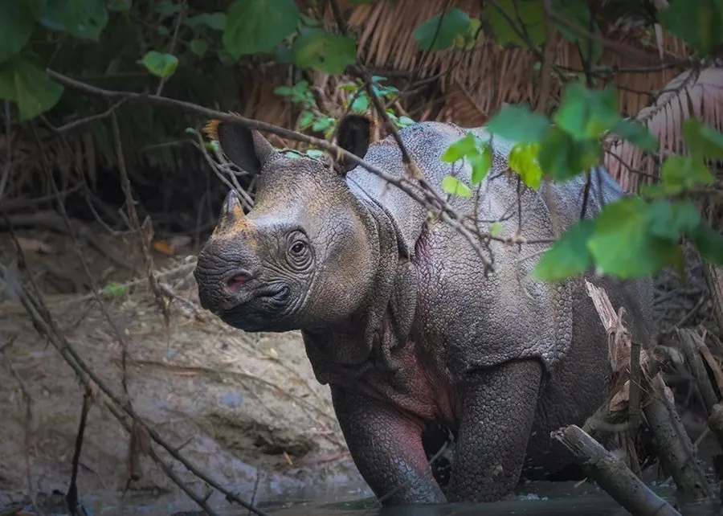

哺乳动物 · 动物界
爪哇犀 Rhinoceros sondaicus

世界上最稀有的犀牛，仅存于印度尼西亚爪哇岛的乌戎库隆国家公园，鼻端有一只短角，全球仅约 70 余头。
- 分类
- 门脊索动物门纲哺乳纲目奇蹄目科犀科属犀属
- 栖息环境
- 热带雨林与河岸灌丛，偏好泥浴和盐渍地
- 地理分布
- 印度尼西亚爪哇岛乌戎库隆国家公园，为唯一野生种群
- 保护级别
- IUCN 极危（CR）；CITES 附录Ⅰ
物种志
爪哇犀体长 3.0–3.5 米，肩高 1.5–1.7 米，体重 900–2300 kg。它的皮肤为灰褐色，肩、背和臀部有明显的褶皱，像披着铠甲；鼻端只有一只短角，雄性的角较长，通常不超过 25 cm，雌性有时没有角。
爪哇犀曾分布于印度东北部、缅甸、泰国、越南和印度尼西亚的雨林，如今仅在印度尼西亚爪哇岛的乌戎库隆国家公园有唯一野生种群，越南的种群已于 2010 年灭绝。它以树叶、嫩枝、果实和藤本植物为食，独居，多在晨昏活动，喜欢泥浴和盐渍地，性情比较温和。雌性妊娠期约 15–16 个月，每胎 1 仔。由于盗猎取角和栖息地压缩，爪哇犀全球仅约 70 余头，被列为极危，是最稀有的犀牛之一。
形态与习性
- 食性树叶、嫩枝、果实与藤本植物
- 体长3.0–3.5 m，肩高 1.5–1.7 m
- 体重900–2300 kg
- 寿命约 35–45 年
- 繁殖妊娠期约 15–16 个月，每胎 1 仔
- 角鼻端单角，通常不超过 25 cm
- 种群数量全球仅约 70 余头
趣味知识
- 爪哇犀只剩印度尼西亚乌戎库隆国家公园一个野生种群。
- 它的鼻端只有一只短角，通常不超过 25 厘米。
- 爪哇犀皮肤有明显的褶皱，像披着一层铠甲。
- 越南的爪哇犀种群已于 2010 年被宣布灭绝。